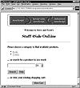

|
Developing Java Enterprise Applications
by Stephen Asbury ; Scott R. Weiner
Wiley Computer Publishing, John Wiley & Sons, Inc.
ISBN: 0471327565 Pub Date: 02/01/99

|
CHAPTER 25
A Four-Tier Online Store
This chapter and Chapter 26, “MiniJMS: A Java Messaging Service Provider,” include large examples that combine a number of the technologies discussed in this book. This chapter uses Enterprise JavaBeans, JDBC, servlets, and JavaServer Pages to create an online store. An online store was chosen for this example because it is familiar, but these concepts and techniques apply equally well to other enterprise applications. The primary goals for this example are:
- • To provide an example that integrates multiple Enterprise Java frameworks
- • To trade performance for simplicity in implementation, where necessary
- • To provide an example that is complex enough to challenge readers and test their understanding of the concepts discussed in this book
The root of these goals is to provide a large, real-world example of how enterprise APIs are used. Of course, including a complete, large-enterprise application is beyond the scope of this book. In fact, this example contains about 2,000 lines of code in 20 classes, making it rather large to include in this chapter. As a result, the entire example is not included in text but is available on the CD-ROM. The key code for this example is included and described in this chapter.
Basic Design
The user’s experience for this online store is similar to the simple version created in Chapter 11, “A JavaServer Page Online Store.” When users first enter the store, they are presented with a welcome page, pictured in Figure 25.1. This page displays a list of the categories from which a user can choose, as well as a form for searching the site and the option of viewing the shopping cart. At the top of the page is a clickable advertisement.
If the user chooses a category, he is presented with a list of items for that category. This page also displays an advertisement at the top, as pictured in Figure 25.2.
Both the list of categories and list of products for each category are generated dynamically based on the directory structure of the store Web site. The list of products is related to the HTML files in a category directory, and the list of categories is related to the category directories in the store’s root directory. JavaServer Pages are used to generate these dynamic lists. Advertisements are presented using the AdRotatorServlet. This is an enhanced version of the servlet discussed in previous chapters.
Upon selecting an item, the user is presented with information about the item and the option to add it to the shopping cart. There is also an option to view the cart without adding an item. An example of these item pages is pictured in Figure 25.3. The test items pages have one shortfall—that is, they do not contain a link back to their category pages. This link could be added easily in a commercial deployment. Otherwise, these are basically the sorts of pages that you see at online stores today.

Figure 25.1 Online store home page.
Figure 25.2 A category page.
By either choosing to add the item to the cart or view the cart, the shopper initiates the ShoppingCart servlet that displays the current cart. The cart displays a list of the current items, their quantities, and prices, as pictured in Figure 25.4. At this point, the shopper can attempt to purchase the items, adjust the quantity of an item, or delete an item from the cart. A link is also provided that returns the user to the page he was on before initiating the cart servlet.
Figure 25.3 An item page.
Figure 25.4 The shopping cart and its contents.
If the shopper chooses to purchase the items in the cart, the shopping cart servlet contacts an Enterprise JavaBean and confirms the availability and price of the items. Based on the bean’s response, the servlet displays a confirmation page, pictured in Figure 25.5. The confirmation page highlights any problems with the order and displays a field for the user to enter his confirmation password.
Confirming the purchase tells the Shopping Cart servlet to again contact the ShoppingCart bean, this time requesting the purchase. If the purchase is successful, the servlet notifies the user with the page pictured in Figure 25.6.
Figure 25.5 Confirmation page.
Figure 25.6 Purchase Confirmed page.
If an error occurs in the ShoppingCartServlet at any point, an error page is sent to the shopper. For example, this error may indicate insufficient credit to make a purchase.
The shopping cart EJB that supports the ShoppingCartServlet uses JDBC to talk to a database. This database contains the store’s inventory as well as the registered shoppers and their credit limits. The bean acts as the interface to this database and implements all of the JDBC code used to implement the store.
The front page also contains a form that the shopper can use to search for a product. The searching is implemented using the HTMLSearchServlet discussed in Chapter 8, “A Servlet-Based Search Engine.” The search engine displays a list of links to relevant pages. (For a more detailed discussion of the search engine, please refer to Chapter 8.)
One example report is included with this example. This report is implemented using a servlet called InventoryServlet. When requested, the InventoryServlet contacts the ShoppingCartBean to retrieve a list of the current products in inventory. This list is displayed to the client in tabular form, including the description, quantity, and price of the item as well as the current sales figures for each item. An example page from the InventoryServlet is pictured in Figure 25.7.
This example builds on a number of the examples used in other chapters. As a result, code has not been repeated here unless it changed significantly. Other chapters are referenced where appropriate so that you can find the code when needed. The entire code for this example is available, in one directory, on the CD-ROM.
The code for this example is organized into a single directory containing two packages. These packages are shopcart.ejbs and shopcart.servlets, and they contain the EJB and servlet code, respectively.
The Shopping Cart EJB
All of the actual purchasing in this example is managed by a single Enterprise JavaBean called ShoppingCartBean. The interface for this bean, called ShoppingCart, defines the methods used by servlets or other clients to access the inventory and credit databases. To keep this example manageable, the schema for this database is fairly simple. There are two tables: INVENTORY and CUSTOMERS. INVENTORY contains four columns, described in Table 25.1.
Figure 25.7 Inventory report.
CUSTOMERS contains three columns, described in Table 25.2.
The customer’s name is used for identification to confirm a purchase. Applications could also include a password for this identification, although this password could be part of the servlet’s environment, the JNDI context, or some other aspect of the design.

|


){kind=link}
){kind=link}
){kind=link}
){kind=link}
){kind=link}
){kind=link}
){kind=link}
){kind=link}
){kind=link}
){kind=link}
){kind=link}
){kind=link}
){kind=link}
){kind=link}